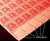

perforation

Has synonym(s): perforation
Definition: A perforation is a small hole in a thin material or web. There is usually more than one perforation in an organized fashion, where all of the holes collectively are called a perforation. The process of creating perforations is called perforating, which involves removing bits of the workpiece with a tool. Old-fashioned lick-and-stick postage stamps are perforated. When a tool makes small cuts in the material (without removing anything) it is called 'rouletting', because that tool often resembles a roulette wheel, with blades around the edge. Raffle tickets are a good example of rouletting.
Source: Wikipedia
Wikipedia Page (Something wrong with this association? Let us know.)
Wikidata Page (Something wrong with this association? Let us know.)